Final Tactical
Readability
完整 tactical shirt、雙段袖、褲腰、thigh／calf 褲管、gloves、boots 與 neck gaiter 持續由既有 65-bone skeleton 驅動；本輪再補強傳統 CS 警匪裝備語言、五種個體 profile，以及五類槍枝的獨立輪廓。底層驗證模型只保留 rig／animation，肌肉 mesh 不參與渲染。
Blue · Counter-Terror / Police
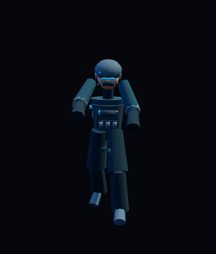
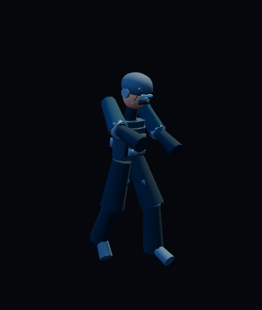
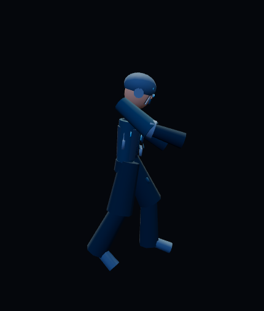
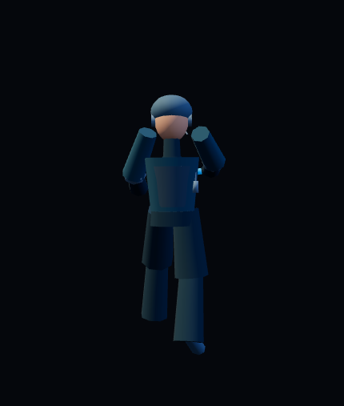
Red · Irregular Armed Unit
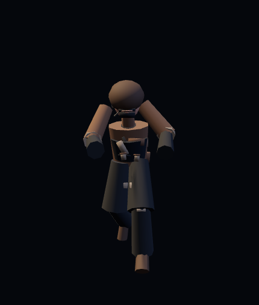
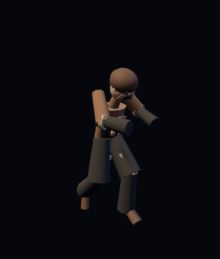
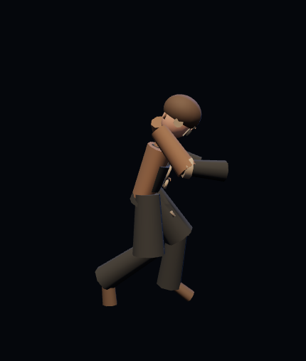
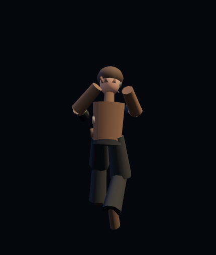
Weapon Family · Silhouette Read
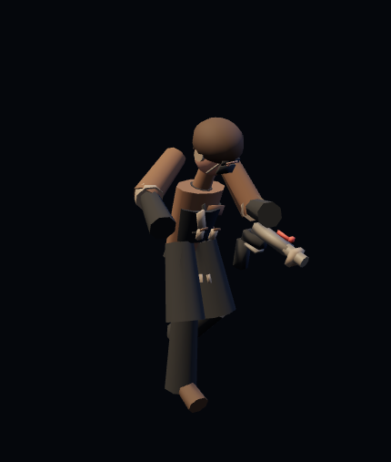
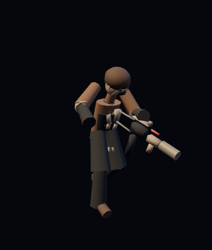
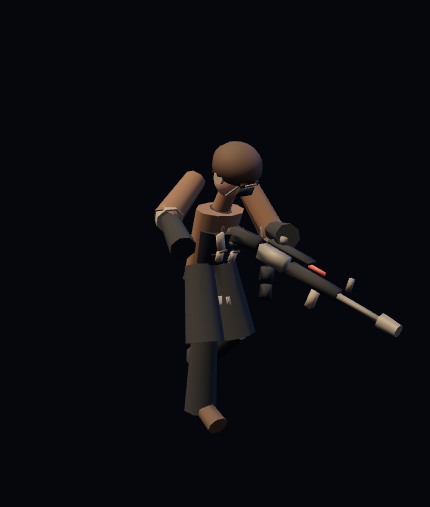
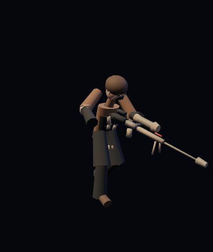
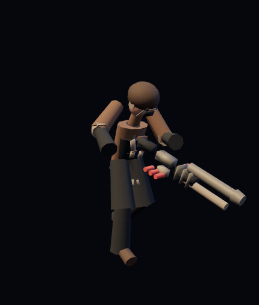
Battle Runtime
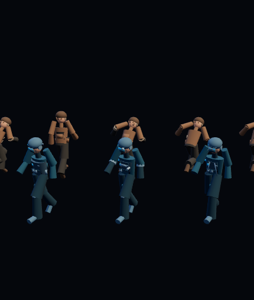
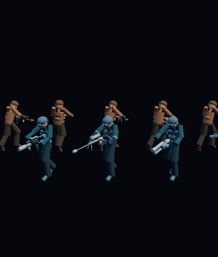
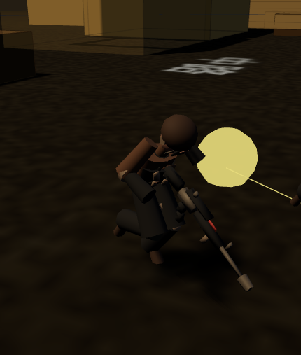
10 人差異由 assault／support／marksman／lurker／utility profile 決定：Blue 使用 helmet rail、comms bridge、monocular、low brim、utility camera；Red 使用 balaclava、heavy head wrap、field cap、hood peak、bandana，另搭配不同 sleeves、carrier、pouches、packs、knees 與 weapon family。正式結果：C2C 9/9、Renderer 24/24、CS-A2 10/10、C2A 13/13、C2B 14/14、CS23 28/28、Camera 8/8、RAF 7/7、StableCanvas 5/5、production build、production Battle smoke 均通過。180 秒 long-run：1544 samples、324 fIdx transitions、geometry shift 0、stale fIdx 0、duplicate RAF/render 0、rapid recovery 0、browser error 0。